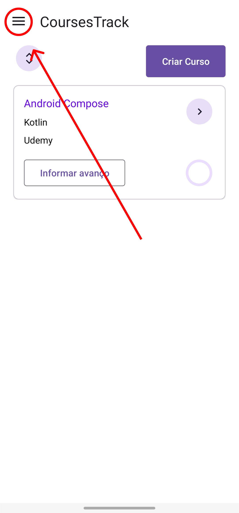

Se você deseja visualizar a política de privacidade em português, role até o fim da página.
Follow the steps below to permanently delete your account and all associated data:
-
Log in to your account.

-
Click the button to open the navigation drawer.
 -
Select the "Delete Account" option.
-
Confirm the deletion of your account.
-
Your account will be successfully deleted.
If you encounter any issues or prefer manual deletion, please contact support at edu.silva.e08@gmail.com.